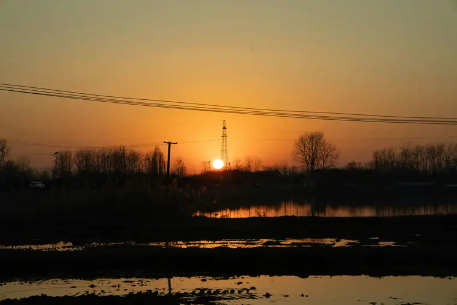
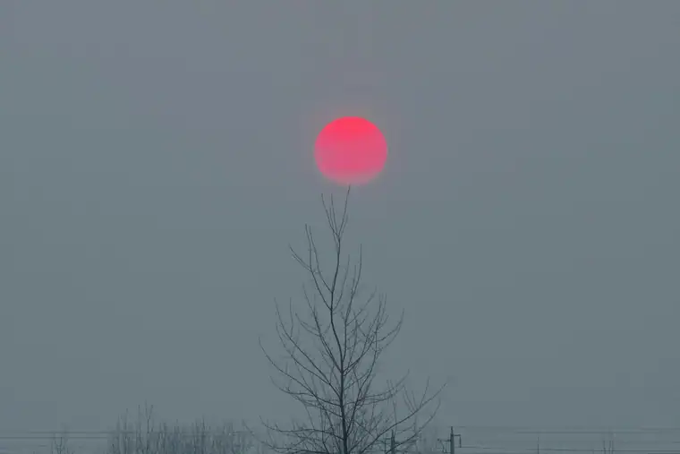

Chuzhou Airport Transfer & Private Car
Nanjing (NKG) Airport to Chuzhou, Langya Mountain, and Fengyang County with licensed professional driver. Historic Eastern Anhui. Fixed price.
Chuzhou in Pictures
Real scenes from Chuzhou — landmarks, streets and everyday life.


Chuzhou at a Glance
A historic city in Eastern Anhui - home to the legendary Langya Mountain, Ming Dynasty imperial kilns, and just 60 km from Nanjing across the Yangtze.
Name Origin
The name "Chuzhou" (滁州) dates to the Sui Dynasty (598 AD), when the prefecture was formally established. The character "滁" refers to the Cao River (滁河), a tributary of the Yangtze that flows through the city. Chuzhou has been an administrative center in Eastern Anhui for over 1,400 years. The city is famous in Chinese literary history as the setting of Ouyang Xiu's celebrated essay Enjoying the Rain at Plum Blossom Pavilion (醉翁亭记).
Culture & Heritage
Chuzhou is deeply connected to the Tang and Song Dynasty literary tradition. The Plum Blossom Pavilion (醉翁亭) on Langya Mountain was built by Ouyang Xiu in 1045 when he served as prefect of Chuzhou. His essay about the pavilion is one of the most famous pieces of classical Chinese prose. The city also preserves Ming Dynasty imperial kiln sites at Fengyang County, which produced ceramics for the Chuzhou old town in Beijing.
Transportation
Chuzhou does not have its own airport. The nearest major airport is Nanjing Lukou International Airport (NKG), about 75 km away - approximately 1.5 hours by road via the G36 Shanghai-Luoyang Expressway. Chuzhou is well-connected by high-speed rail: Chuzhou Railway Station (滁州站) on the Beijing-Shanghai HSR line is only 20 minutes from Nanjing South Station. The new Chuzhou North Station (滁州北站) serves additional routes.
Geography & Environment
Chuzhou lies in Eastern Anhui Province, immediately north of the Yangtze River and only 60 km from Nanjing city center. The landscape transitions from the flat alluvial plain of the Yangtze basin to the hilly Langya Mountain (琅琊山) area in the north - a region of forests, streams, and historic temples. The area has a humid subtropical climate with distinct four seasons.
Maps & Transit
Top Chuzhou Attractions
From legendary mountain pavilions to imperial kilns - discover historic Eastern Anhui.
Popular Chuzhou Routes
Fixed-price private car service for Chuzhou's most popular journeys.
🌊 NKG Nanjing Airport - Chuzhou City
From ¥218($30.7)~75 km - 1.5 hours - Economy/Business/MPV
Chuzhou has no airport. Your driver meets you at Nanjing Lukou International Airport (NKG) arrival hall and drives you directly to your Chuzhou hotel. Door-to-door comfort from the nearest major airport.
⛰️ Langya Mountain Day Trip
From ¥218($30.7)~10 km - 20 min each way - Half day
Visit the Plum Blossom Pavilion, Quan Jue Temple, and mountain trails of Langya Mountain. Your driver takes you to the scenic area entrance and waits while you explore the literary and natural heritage. Particularly beautiful after rain.
⛰️ Fengyang County Imperial Kiln Tour
From ¥218($30.7)~50 km - 1 hour each way - Half day
Visit the Ming Dynasty imperial kiln archaeological site at Fengyang County, where ceramics for the Beijing Chuzhou old town were produced. Your driver can arrange an English-speaking guide at the site to explain the history and techniques.
🌊 Chuzhou + Nanjing Day Trip
From ¥218($30.7)~60 km to Nanjing - Full day
Combine Chuzhou morning visit (Langya Mountain or Plum Blossom Pavilion) with an afternoon in Nanjing - the Confucius Temple area, Qinhuai River, or Ming Xiaoling Mausoleum. Your driver handles the border crossing between Anhui and Jiangsu provinces.
Transparent Pricing in Chuzhou
Published rates, no estimate games. Check the numbers yourself before you book — and the price you see is the price your driver is paid from.
Fixed Price List — 滁州 (Chuzhou)
Published rates from our 2026 quote sheet. Renminbi first, USD for reference at 1 USD = ¥7.10. Every price below already includes tolls, parking, driver service and free airport waiting time (up to 60 minutes after your flight lands) — nothing is added on the day.
🛬 Airport & Intercity Transfer
One flat fare for airport pickup, drop-off or city-to-city — intercity costs the same as the airport run. 35 km and 60 minutes included; beyond that we charge by the minute and the kilometre at the rates shown.
| Vehicle | Seats | Bags | Fixed fare | USD | Beyond 35 km / 60 min |
|---|---|---|---|---|---|
| 4-seat Economy Sedan | 4 | 2 | ¥218 | ≈ $30.7 | ¥1.11/min · ¥4.86/km |
| 4-seat Comfort Sedan | 4 | 2 | ¥312 | ≈ $43.94 | ¥1.22/min · ¥5.38/km |
| 6-seat Business Van | 6 | 3 | ¥382 | ≈ $53.8 | ¥1.3/min · ¥5.72/km |
| 8-11-seat Business Van | 11 | 4 | ¥655 | ≈ $92.25 | ¥1.69/min · ¥7.44/km |
| 12-18-seat Minibus | 18 | 4 | ¥764 | ≈ $107.61 | ¥1.89/min · ¥8.29/km |
| 19-55-seat Coach Bus | 55 | 5 | ¥796 | ≈ $112.11 | ¥2.15/min · ¥9.44/km |
🚗 Hourly Private Charter
Book the car and the hours, keep the car for the day. Unused kilometres can be carried into the next tier, so a long day never turns into a penalty. The driver stays with you — you set the stops.
| Vehicle | 2h / 35km | 4h / 50km | 6h / 75km | 8h / 100km | 10h / 125km |
|---|---|---|---|---|---|
| 4-seat Private Car | ¥260 | ¥416 | ¥546 | ¥637 | ¥663 |
| 6-seat Business Van | ¥338 | ¥546 | ¥715 | ¥832 | ¥858 |
| 8-11-seat Business Van | ¥487 | ¥786 | ¥1030 | ¥1198 | ¥1236 |
| 12-18-seat Minibus | ¥584 | ¥943 | ¥1236 | ¥1438 | ¥1483 |
| 19-55-seat Coach Bus | ¥701 | ¥1132 | ¥1483 | ¥1725 | ¥1779 |
Why travellers book Chuzhou with Chinawheely
Six things you get with every booking — in Chuzhou and across all 346 cities on the platform.
Licensed travel agency, not a ride-hail app
Chinawheely is a registered travel agency (L-HUB-101603). Your booking is a travel contract with a licensed operator — not a broker handing your number to whoever answers the phone.
One locked price, shown before you pay
The price you see is the price you pay. Tolls, parking, driver service and airport waiting time are already inside it. No surge pricing, no meter, no cash-on-the-day surprise.
Flight tracked, waiting time on us
We watch your flight number in real time. If it lands late or is delayed, your driver shifts with it and the waiting time stays on us — not on your bill.
A licensed driver who knows the city
Every car is driven by a professional local driver who knows the routes, the shortcuts and the parking that actually works near the attractions — with English communication and a name board on arrival.
Free changes up to 48 hours before
Plans move. Reschedule or cancel any booking free of charge up to 48 hours before your scheduled pickup, straight from your confirmation link.
A real human on WhatsApp, 8AM–12AM Beijing time
One message reaches a person who can re-price, re-route or re-plan your trip on the spot. No ticket queue, no chatbot loop.
Book Chuzhou at the published price
Pick your vehicle, see the fare line by line, and pay by PayPal or Alipay. Free changes up to 48 hours before pickup — or ask on WhatsApp and we will hold a car for you.
The quote is valid for 48 hours, and you can change or cancel free up to 48 hours before pickup.
Getting to Chuzhou: Airports & Railway Stations
Chuzhou has no airport. Here is how to reach Chuzhou from the nearest major hubs.
Nearest Airports
🏘️ Nanjing Lukou International Airport (NKG)
75 km to Chuzhou - 1.5 hours by road
NKG is Jiangsu Province's main aviation hub with domestic routes across China and international flights to Asia, Europe, and North America. The drive to Chuzhou via the G36 Shanghai-Luoyang Expressway takes approximately 1.5 hours. Our private car is the most comfortable option.
🌉 Hefei Xinqiao International Airport (HFE)
150 km to Chuzhou - 2.5 hours by road
HFE is Anhui Province's main aviation hub and a possible alternative if NKG flights are not convenient. The drive takes approximately 2.5 hours via the G40 Shanghai-Sian Expressway and G36 Shanghai-Luoyang Expressway.
Railway Stations
🌊 Chuzhou Railway Station (滁州站)
HSR hub - Beijing-Shanghai line
On the Beijing-Shanghai high-speed rail corridor, with fast trains to Nanjing South (20 min), Shanghai (2.5 hours), and Beijing (3.5 hours). About 8 km from the city center.
🌊 Chuzhou North Station (滁州北站)
Conventional rail - Northern routes
Serves conventional (non-HSR) trains to destinations in Anhui and northern China. About 5 km from the city center.
🗼 Need a Station Pickup?
We meet you at the exit with a name board and help with luggage.
Book Station TransferChuzhou Best Photo Spots
Capture historic Eastern Anhui from its most scenic angles.
🏘️ Plum Blossom Pavilion After Rain
Best after rainfall
Ouyang Xiu wrote his famous essay about the pavilion "enjoying the rain" - and for good reason. After rain, the streams swell, mist rises from the forest, and the pavilion seems to float above the clouds. The best photography conditions follow a rain shower in spring or autumn.
⛰️ Langya Mountain Forest Trail
Best in early morning
The paulownia forest covering Langya Mountain is at its most atmospheric in early morning when mist lingers between the trees. The ancient Quan Jue Temple emerges from the forest as you climb. Spring when the paulownia trees bloom adds purple flowers to the green forest canopy.
🛕 Censer Temple Summit at Sunset
Best at golden hour
From the top of Censer Mountain (Yaoshan), you can photograph the sunset over the Chuzhou plain with the temple as a foreground element. The city spreads below and the light creates long shadows across the agricultural landscape. Very few tourists - a local secret spot.
⛰️ Fengyang County Kiln Structures
Best with soft light
The Ming Dynasty kiln structures at Fengyang County - the arched chambers, clay processing areas, and kiln furniture - make compelling industrial heritage photography. The natural clay colors and textures are best captured with soft side lighting to emphasize the forms.
🌊 Chuzhou City Wall at Dawn
Best at dawn
The historic sections of Chuzhou city wall date to the Song Dynasty and are beautifully lit in the early morning. Local tai chi practitioners practice on the walltop in the cool morning air - a peaceful scene combining history, culture, and daily life.
⛰️ Spring Blossoms on Langya Mountain
Best in March-April
In early spring, plum blossoms, peach blossoms, and cherry blossoms cover the slopes of Langya Mountain around the Plum Blossom Pavilion. The traditional Chinese garden aesthetic of blossoms, water, and pavilion architecture is at its most beautiful. A peak photography season.
Food & Shopping in Chuzhou
Must-Try Chuzhou & Anhui Cuisine
Chuzhou Smoked Duck (滁州熏鸭)
A specialty of the Chuzhou region - whole duck slowly smoked over tea leaves, osmanthus wood, and rice bran. The skin becomes deep amber and fragrant while the meat stays juicy. Sold at traditional butcher shops and markets throughout the city. Best eaten fresh.
Bai Jiu Braised Pork (白酒焖肉)
Slow-braised pork belly cooked with Baijiu (Chinese liquor), soy sauce, and spices until completely tender. A rich, indulgent dish served at traditional restaurants. Often accompanied by mantou (steamed buns) to soak up the sauce.
Anhui Huizhou Style Dishes
Chuzhou cuisine belongs to the Huizhou (徽菜) culinary tradition of Anhui Province - known for using wild herbs from the mountains, smoked meats, and rich savory flavors. Look for dishes with bamboo shoots, wild mushrooms, and river fish from the local streams. The use of fermented ingredients is characteristic - stinky tofu, stinky fish, and fermented vegetables are all part of the tradition.
Langya Mountain Tea (琅琊山茶)
Green tea grown on the slopes of Langya Mountain. The mountain climate produces a particularly fresh and aromatic tea. Available at tea houses near the Plum Blossom Pavilion and at specialty tea shops in the city.
Stinky Tofu (臭豆腐)
Fermented tofu with a pungent aroma and savory-sour flavor, deep-fried until crispy outside and creamy inside. A beloved street food found at night markets throughout Chuzhou. Often served with pickled vegetables and chili sauce.
Shopping Destinations
Chuzhou Lao Street Night Market
The historic Lao Street (老街) area has traditional shop houses selling local specialty foods, dried goods, and small crafts. A pleasant evening stroll with red lanterns and local atmosphere. Great for edible souvenirs and small gifts.
Chuzhou Specialty Tea Shops
Langya Mountain green tea is the signature local product. Available at specialty tea shops throughout the city and at the mountain scenic area. Prices are much better than in tourist areas - ask your driver to recommend a reputable shop.
What to Buy in Chuzhou
Langya Mountain Green Tea
The tea from Langya Mountain is prized for its fresh, floral character. Available in different grades - the premium mountain top picking commands higher prices but is exceptional quality. A 100g package makes a meaningful and lightweight souvenir.
Chuzhou Smoked Duck (vacuum packed)
Many shops near Lao Street sell vacuum-packed smoked duck for travel. The smoked duck travels well and keeps for several days refrigerated. Available at traditional food shops in the city center market area.
Fengyang County Pottery
Handcrafted pottery inspired by the Ming Dynasty imperial kiln designs found at Fengyang County. Available at craft shops near the kiln site and in the city. Your driver can help find the best pieces at fair prices.
Medical History & TCM Heritage of Chuzhou
Explore the traditional medicine and wellness heritage of Eastern Anhui.
Huizhou Medicine: Anhui TCM Tradition
Anhui has one of China's oldest medical traditions. The Huizhou (徽州) school of Traditional Chinese Medicine developed in the mountains of southern Anhui - known for its emphasis on constitutional diagnosis, herbal formulas adapted to individual patients, and the use of wild mountain herbs. While the Huizhou region is geographically separate from Chuzhou, the same herbal medicine culture influences the area. TCM pharmacies in Chuzhou city center carry a full range of medicinal herbs and offer consultation services.
Langya Mountain Wild Herbs
Mountain pharmacy. The forested slopes of Langya Mountain have traditionally been a source of medicinal herbs. Bai Shao (white peony root), Dan Shen (salvia), Huang Qi (astragalus), and various medicinal mushrooms grow in the mountain ecosystem. Local herbalists have for centuries gathered and cultivated these plants for TCM formulas. Available at TCM pharmacies and mountain village markets in the Chuzhou region.
Seasonal Cleansing & Wellness Traditions
Spring herbal traditions. Like much of Anhui, Chuzhou has seasonal wellness traditions - in spring, locals gather wild herbs from Langya Mountain for cleansing soups and medicinal dishes. Mugwort (艾草) is gathered for moxibustion treatments and chrysanthemum (菊花) for cooling teas. These traditions connect the natural environment directly to health maintenance. Your driver can take you to a local market where seasonal wild herbs are sold in spring.
TCM & Imperial Kiln Connection
Medicinal ceramics. Ming Dynasty imperial kilns at Fengyang County produced not only decorative ceramics but also medicinal porcelain - ceramic vessels specifically designed for preparing and storing herbal medicines. The unique clay compositions were believed to enhance the efficacy of certain herbal preparations. The kiln museum at Fengyang County displays these medicinal vessels.
Chuzhou Local Secrets
Insider tips to help you experience Chuzhou like a local.
Book NKG Airport Transfer 24 Hours Ahead
Chuzhou has no airport - your Nanjing Lukou Airport (NKG) transfer is essential. The 75 km journey is not covered by regular taxis or ride-hailing apps. Book at least 24 hours ahead so we can coordinate with your flight and have your driver waiting at arrival.
Visit Langya Mountain After Rain
The Plum Blossom Pavilion is at its most beautiful after rainfall - exactly as Ouyang Xiu described in his famous essay. Spring and autumn rain showers create mist, flowing streams, and the characteristic "enjoying the rain" atmosphere. Check the weather forecast and time your visit accordingly.
Try the Smoked Duck at Lao Street
The Chuzhou smoked duck (熏鸭) is the city signature food. The best version is at the traditional shops along Lao Street (老街) in the city center - not the tourist restaurants. Ask your driver to drop you at Lao Street and wander until you find the shop with the longest queue of locals.
Combine Chuzhou with Nanjing
Chuzhou is only 60 km from Nanjing city center - less than an hour by expressway. Use Chuzhou as a quieter base and do a day trip to Nanjing (Confucius Temple, Qinhuai River, Ming Xiaoling Mausoleum). Your driver can take you to Nanjing and back in one day.
Censer Mountain at Sunset
Very few tourists know about Censer Mountain (Yaoshan) in the city center - even most guidebooks do not mention it. The hike to the top takes about 40 minutes. At sunset, you get panoramic views over the city plain with almost no one else there. A genuine local secret.
Fengyang County Kilns Are Underrated
The Ming Dynasty imperial kilns at Fengyang County are not well-known even among Chinese tourists, which means they are never crowded. The archaeological site is genuinely interesting - you can see the actual kiln chambers, clay processing areas, and understand how imperial porcelain was made. Allow 2-3 hours.
Best Time to Visit Chuzhou
The climate record of Chuzhou decides when the city is at its most comfortable to walk.
The annual average temperature is 15.4 °C; annual rainfall averages 1,055 mm; July is the hottest month at 27.6 °C; January the coldest at 2.3 °C; The climate pattern includes The monsoon.
Spring
Monthly means in March, April, May run 9–21 °C. Rainfall over those three months totals about 236 mm.
Highlights:
Summer
Monthly means in June, July, August run 24–28 °C. Rainfall over those three months totals about 512 mm.
Highlights:
Autumn
Monthly means in September, October, November run 10–23 °C. Rainfall over those three months totals about 200 mm.
Highlights:
Winter
Monthly means in December, January, February run 2–5 °C. Rainfall over those three months totals about 106 mm.
Highlights:
Book Your Chuzhou Airport Transfer
Fixed price, licensed professional driver, free flight tracking. From Nanjing Lukou Airport (NKG) to any Chuzhou hotel or attraction.
Get Instant QuoteQuestions? WhatsApp +86-155-2777-1775
More China destinations
Compare routes, published prices and local driver tips across the cities we cover.